1. Android AOSP - Debugging AOSP Platform code with Android Studio - Java Debugger
In my previous post about using JDWP I have listed the theory and practice of connecting and debugging a remote Java based application in Android, using adb, ddms, monitor, and jdwp. What all IDE's do for your application debugging is essentially the same; They work, and require no introduction. But what happens when you want to debug Android Framework code (Android Platform, AOSP, I don't know why some people refer to it as Framework, it's just a small component in the platform!)? The answer for it is that you need to work hard, figure out all kind of JDWP connectivity issues, and then find your IDE specific way to both connect, instrument (debug), and show the right source code.
In this post I will detail the steps to make it work with Android Studio.
Without too many stories about what I like and mostly dislike about Studio, once you have:
Built your AOSP platform
*( . build/envsetup.sh && lunch \<your_config\>-\<variant\> && make ...)*Created the Android Studio project for importing to
*( mmm development/tools/idegen && development/tools/idegen/idegen.sh )*Imported the project ( open android.ipr from Android Studio)
You can view sources, and efficiently navigate the Java code, which is nice, but you can't do much with it, despite Android Studio's announcement that it "identified Android Framework code", because Studio still expects an Application to be debugged.
However, Android Studio does allow to connect to a remote Java debugger, which is exactly what we need in our case!
The Application selection and port forwarding processes (e.g. who gets port 8700, when you need another port) are the same as in my previous post, so I will not repeat them, but rather concentrate on the steps to configure Android Studio to connect to the target over port 8700 (you can do it on any other port forwarded app as well).
Now what you need to do the get the job done is:
Create a Remote debugging configuration
Set the port in it
Select the Debuggable process.
I recommend to start monitor and then click on the relevant process. This will only attach
You can also from within the platform itself set a debuggable process (won't work for the system_process if you want to do live debugging, but you can actually also take care of that, if you run it manually (adb stop firs)
Hit debug / Run-Debug / ctrl+alt+F9 - This will attach to the process
Set your breakpoints (you can of course do it before Debug).
Some screenshots and explanations are listed below (and so bloat the post. Sorry about that, but it seems to help more than just text.)
1.1. Live Debugging Session (with screenshots)
Objective: Enter a breakpoint in the Phone Dialier application when the user dials "1" on the DialPad. Means: Show the configuration, show a typical connection error, how to workaround it, and get the job done! Steps:
First, import the Android.ipr to Studio. You will see something like this: 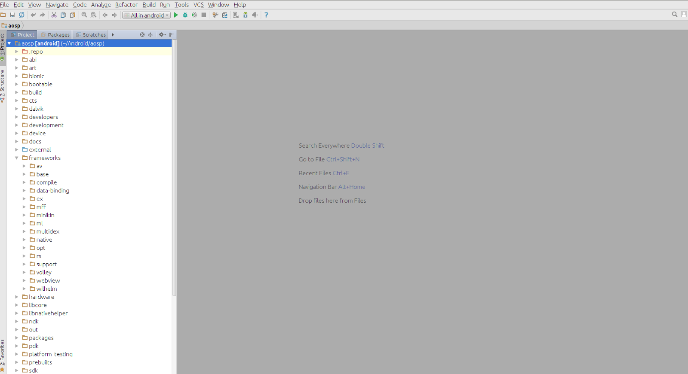
Create a new Debug Configuration: On Android Studio's menu: go to Run, Edit Configurations and then click the Remote configuration, and click the + sign at the top left part of the window. 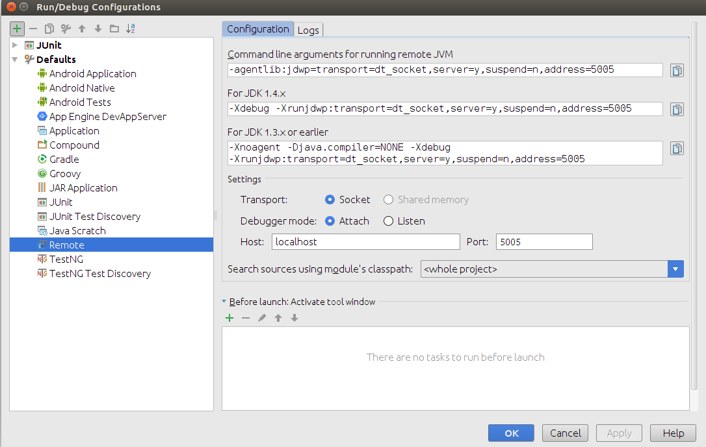
This will duplicate the configuration. Give it a meaningful name, and edit the port (to 8700, or any port. You can create multiple configurations, and debug multiple apps simultaneously).
I called the new configuration AOSP_Java_Debug , and set the port to 8700 .
After editing the settings click OK. 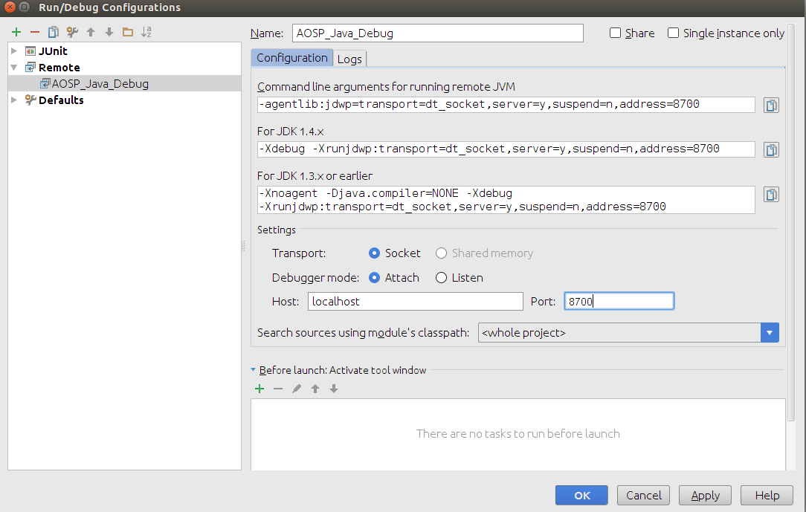
You are now ready to debug. Or are you? Well, you are not, because there is a connection error. In the next step will explain it. 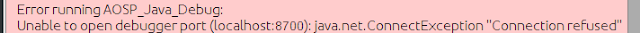
The previous error message told us Android Studio could not connect to port 8700 on the localhost, which is the DDMS port on our host. Let's see if it is bluffing, by checking what is the status of port 8700 in netstat . We can see that no one is listening on this port. 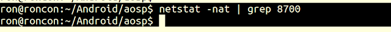
In order to listen on the port, we need DDMS. So the next thing to do is to open monitor from the Android SDK. You could also open DDMS directly from your AOSP build. If you want to take care of port forwarding yourself, or not deal with port 8700 - you are more than welcome to do so. After opening monitor you will be in the following state as in the following diagram. Click the process you would like to debug, and you will see that there is a / 8700 next to its debugging port (that's the other number in the last column, The rest of the column describe the package or "nice name" (set when starting app_process/zygotte, I won't get to that here), and the PID (Process id) of the app.
Important for Native debugging: If you want to use GDB on the native part - --attach to this PID! 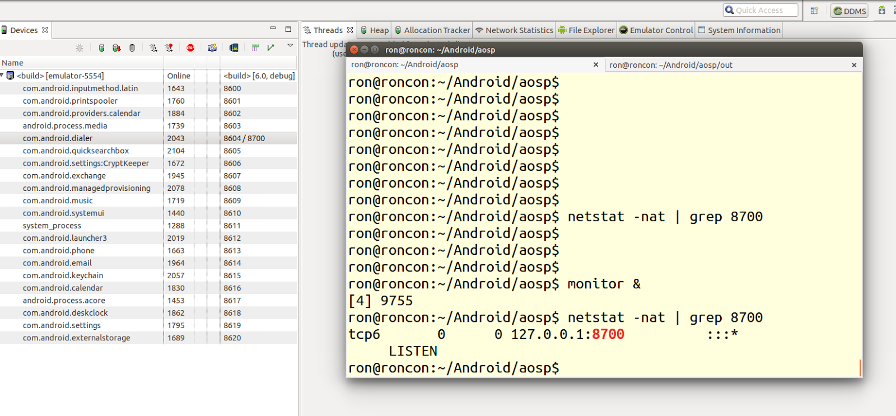
Let's set a breakpoint at the relevant line (Just click next to it in the pane) 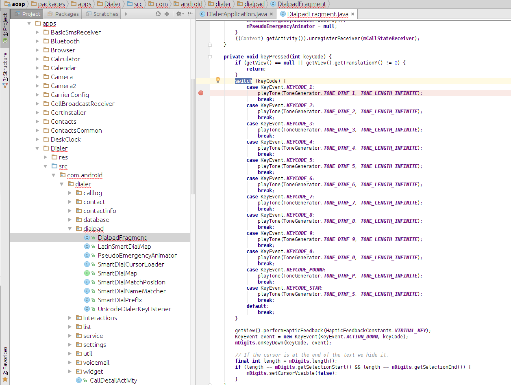
Now let's connect our debugger. Hit the debug button. Now when you try to debug - you will see you are connected (" Connected to the target VM, address: 'localhost:8700' , transport: 'socket' "). Sweet! 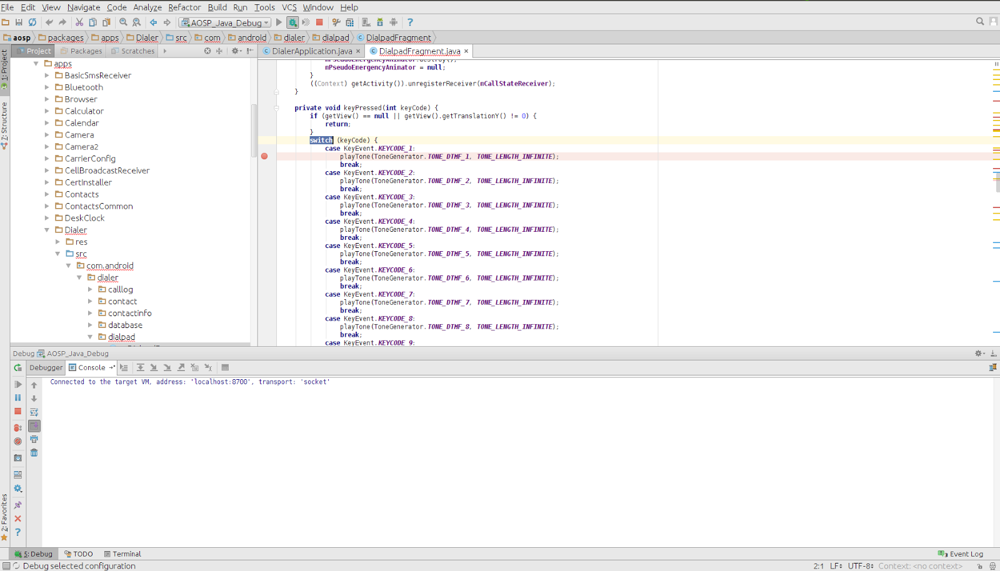
Let's open the debugged app, and reach our breakpoint. Note the green bug in the monitor/DDMS, it means that we are connected. You will also see a corresponding message in the Logcat. 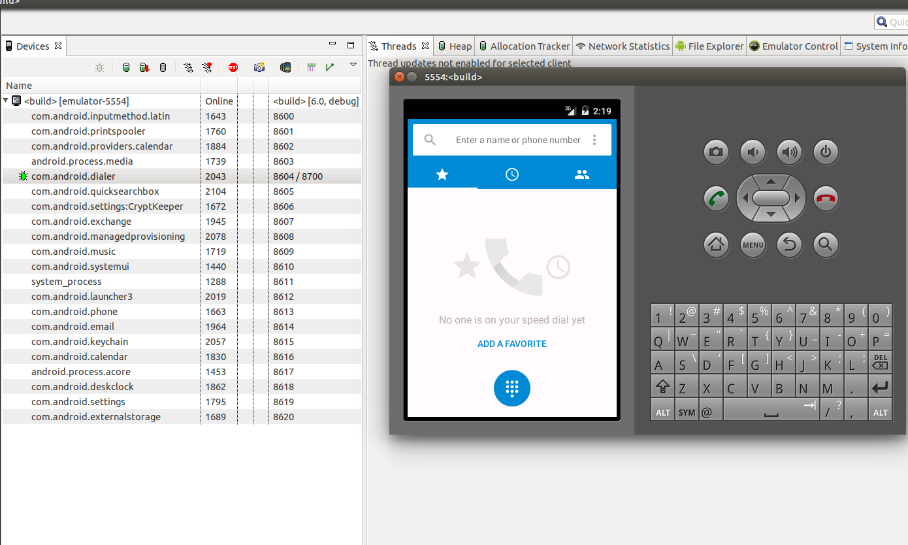 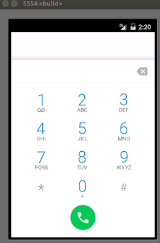
When we press "1" , we will reach our breakpoint. Disregard the 'Connection Refused' error message - it was 7 minutes ago - before we opened the monitor! 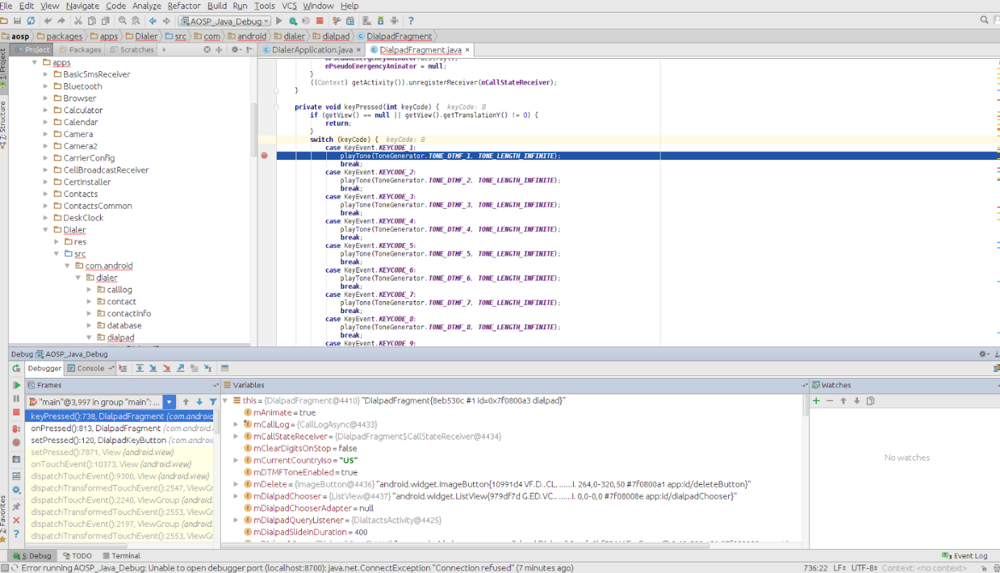
Now you can proceed debugging. If you single step, you will hear an annoying beep that will not go away until you have resumed / finished the business logic of the button. That's a good sign - you have felt progress in several senses! 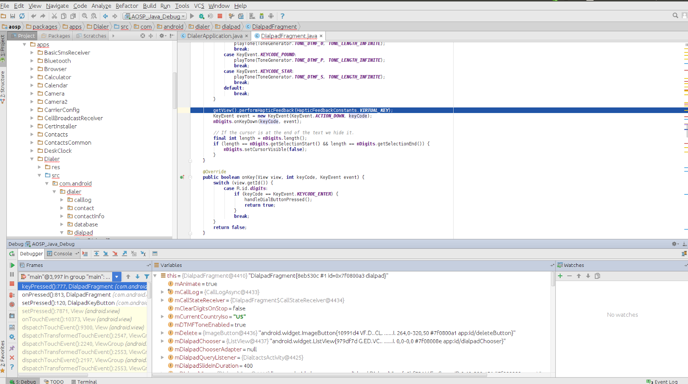
After resuming, you will see "1" pressed. Hooray!
Documenting is harder than actually doing, so just get doing it, and if you found the explanation helpful - please let me know. I really wrote this post because I didn't find any normal answer to that over the internet, am being asked about it in my Android Internals/Security/Advanced Native Programming classes (\@see http://www.thepscg.com ) and outside of them, so I am pretty sure it will interest a reader or two.
Next in line - Native debugging (come on, just use gdb and gdbserver. I am willing to give you the pleasure of using ndk-debug et. al...)